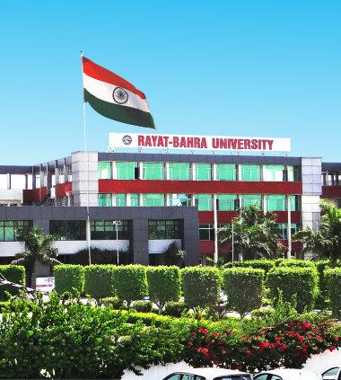
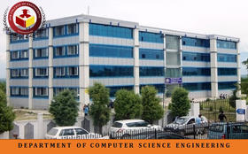

Formal engineering foundations combined with relentless self-directed software development practice.

Completed in-depth curriculum focusing on Data Structures & Algorithms, Object-Oriented Software Architecture, Database Management Systems, Computer Networks, and Full-Stack Web Development. Served as technical lead on multiple university hackathons and projects.

Acquired strong foundational analytical reasoning, systematic troubleshooting, mathematical modeling, and CAD drafting discipline which seamlessly transitioned into robust software engineering thinking.
Early schooling years establishing core academic curiosity, scientific exploration, and foundational teamwork skills.